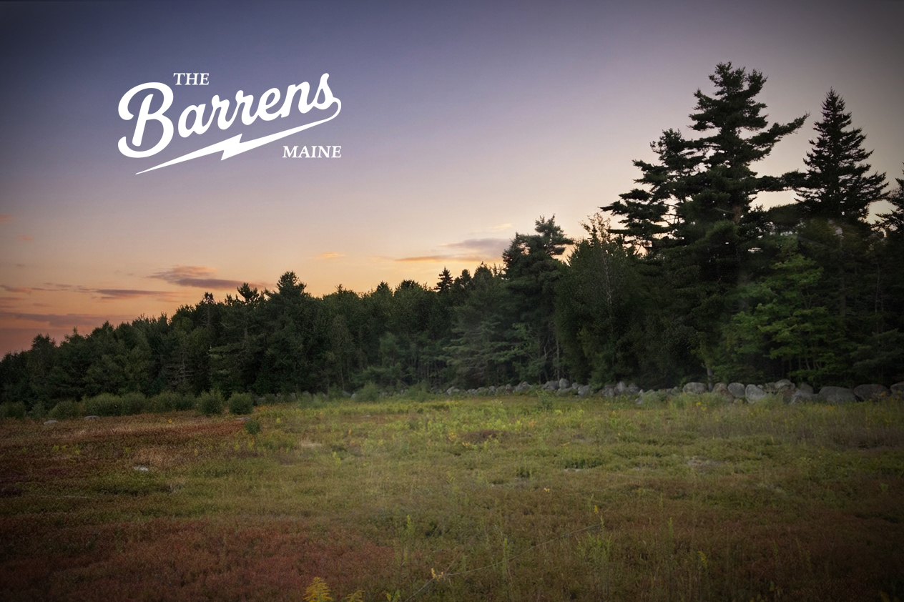

Hey there, my name is Mike. If you have been following along or have caught wind of what is happening on the property, I wanted to take a minute to share how all of this started, what we are building here in Stockton Springs, and why this land matters so much to me.
The short version is that starting in August 2027, we plan to open the property for U-Pick wild lowbush blueberries, launch our roadside farm stand, and build a brand rooted right here in rugged Midcoast Maine, where workwear meets agriculture, art, and action sports culture. But before we get there, here is how we got here.
How we got here
Back in 2022, I bought this 21-acre property, which includes about eight acres of native wild lowbush blueberries and solid road frontage near Route 1A. At the time, a commercial blueberry company was leasing the land and taking care of everything.
Since my day job is working as a merchant mariner aboard an oceanographic research vessel, that arrangement made sense. I am away for months at a time, and while I was at sea, I knew the fields were being maintained and the crop was being cared for. This year, though, that arrangement came to an end, and I did not know in time to prepare for the season myself.
You might have noticed that the fields looked a little rough around the edges. I did not own a tractor or bush hog to manage them on my own, and before I knew it, the berries had ripened and sat there unpicked all summer. My family, our neighbors, and plenty of local wildlife enjoyed their share, but a tremendous amount of ripe fruit was left sitting in the fields.
Watching thousands of pounds of wild fruit go unharvested was the tipping point for me. I had been carrying around ideas about what this property could become for a while, but that experience made it clear that I could not keep those ideas on the back burner. Thoughts had to become action.
So I formed Sessa Farms LLC and decided to take over management of the land myself. That is changing now. The equipment is coming, the work is underway, and these barrens are finally getting the hands-on care they deserve.

Building it for real
I want to be honest about where this is coming from. I do not come from a farming family, and I certainly do not come from a wealthy one. I may not come from generational wealth, but I do come from generations of hard work, passed down through my Irish and Italian immigrant family heritage. There are no private equity firms or corporate investors behind this brand. I am building it from the ground up as a blue-collar worker, funding it with what I earn, learning as I go, and doing as much as I can with my own two hands.
This is not some polished operation that appeared overnight. It is something I am putting together piece by piece around a demanding job and a lot of hard work. If things look a little rough around the edges right now, that is because they are. We are building this real and raw. The work comes first, and the polished version comes later.
There is also a much bigger reason I want to do this.
Why the land matters
If you have never spent time in a wild lowbush blueberry barren, it is easy to overlook what you are looking at. These landscapes are a unique part of Maine's agricultural and natural heritage. Wild lowbush blueberries are not planted in neat rows every spring like many conventional crops. These native plants thrive in Maine's thin, acidic soils and spread through underground rhizomes, creating a landscape shaped by generations of natural growth and agricultural use. They are part of what makes this place special.
Right across the field from us, a solar project is actively being developed on the same blueberry barren as ours, separated only by a tax parcel line. Central Maine Power is already putting up new power lines and boxes near the property. While ground has not been broken on the solar field itself, it is hard not to notice the changes hitting so close to home. Lately, the neighbor behind that project has also started clearing rocks from another barren down the road, with rumors swirling that it may be heading toward the same fate.
Watching productive agricultural ground shift like this hits hard because it raises a real question: why should our working agricultural lands benefit cities hundreds of miles away while local Mainers watch their electricity bills go up? We do not receive a stipend or electrical surplus credits. From where I stand, we are being asked to carry the cost of green energy for other states at the expense of critical, viable agricultural land.
Standing on my own property, I think about what happens to the working landscapes we grew up with and who gets a say in their future. I was at sea during the town meetings, trying to follow along from thousands of miles away. Being so far from home while something affecting our local landscape was unfolding was tough.
It made one thing clear to me: people need a chance to experience these barrens firsthand. Not just see them from the road or hear about them, but actually walk through them, understand what grows here, and appreciate why they are worth keeping.
I am incredibly grateful to the friends, family, and neighbors who showed up and spoke on our behalf, especially Brian and Becky at Abreu Acres. Your support helped turn what started as a personal concern into something with a larger purpose.
A place worth stopping for
The goal here is not just to grow fruit. I want to create a place where people can pull in, take a breath, stay awhile, and leave with a good memory tied to this land. The U-Pick blueberries and farm stand opening in August 2027 are the heartbeat of that idea. They are what will bring people onto the property, give them a reason to walk the fields, and let them experience what grows here.
The Barrens Brand is the culture built around it. It is rooted in community access, independent creativity, rugged coastal work ethic, and the board sports culture that helped shape who I am. Those things might not traditionally share the same address, but they make sense together to me. They are part of the world I come from and the kind of place I want to build.
We are starting with a small-scale micro-farm footprint and planning to grow carefully over time. We are not trying to become a massive industrial operation overnight. Along with fresh and frozen wild lowbush blueberries, the farm stand will feature surplus produce from the property, goods from local artisans, independent art, and custom branded coffee created in collaboration with roasters we respect both here in Maine and beyond.
The goal is to keep it authentic, keep it local, and create a space where locals and travelers can stop, grab some fruit, discover good work made by good people, and hang out for a while. We are not trying to manufacture a perfect version of Maine. We are building something honest.
Just getting started
There is a lot of work between here and opening day in August 2027. The fields need attention, equipment needs to arrive, the farm stand needs to be built, and I will still be spending stretches of time at sea, coming home, and getting right back after it.
I am sure there will be things I get wrong along the way, plenty to learn, and times when this will not be easy. But I am excited about what is ahead. What started with an unpicked field is becoming Sessa Farms, The Barrens, and a chance to keep this land working while opening it up to the people around it.
I want this to be a place people feel connected to: a place that supports local makers, celebrates hard work, and gives people a reason to spend time outdoors and appreciate the landscape around them.
To everyone who has reached out, offered a hand, pulled in to see what is going on, or simply followed along, thank you. It means a lot. We are building this from the ground up, and we are just getting started. See you out at the barrens.
- Mike
“The care of the Earth is our most ancient and most worthy, and after all our most pleasing responsibility. To cherish what remains of it and to foster its renewal is our only legitimate hope.”
Wendell Berry